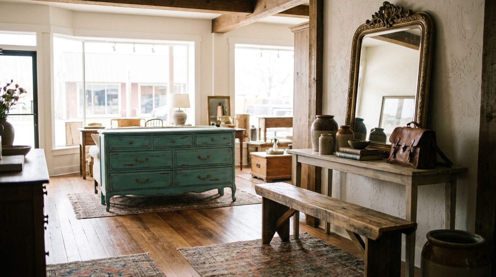
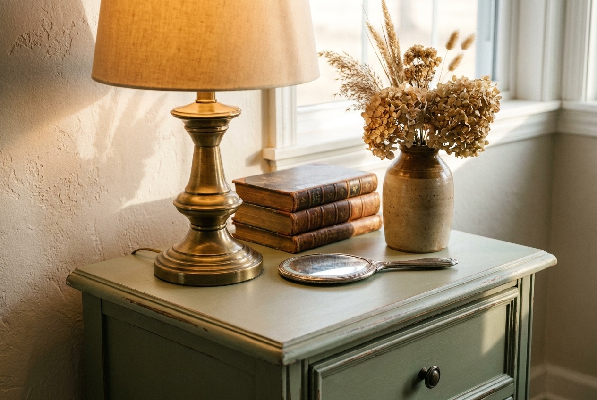

Vintage & antique furniture
Dressers, cabinets, chairs, and odd good finds with real age to them. The pieces that already have a story before they reach your house.

141 E Cascade Ave · Sisters, Oregon
Vintage and antique furniture, refinished pieces, and handmade tables and benches on Cascade Avenue. If you love something here, you can stop in and take it home.
What we carry
Some of it is old and built to last. Some of it Marla brought back to life. And some of it is brand new, made here in the shop. Here's what you'll usually find.
Dressers, cabinets, chairs, and odd good finds with real age to them. The pieces that already have a story before they reach your house.
Old furniture brought back and made usable again. Stripped, repaired, and finished so it's ready to live with, not just look at.
Tables and benches made by hand. Solid, simple, and built for everyday use at dinner, in an entryway, or out on a porch.
Narrow tables that fit a hallway or an entry. The first thing you set your keys on when you walk in the door.
Smaller things worth a second look. The kind of pieces that come and go, so it's worth stopping in to see what's new.
If you saw something on Facebook and want to know if it's still here, the fastest way is to call.
541-904-0066
Preview imagery. We'll swap in your real photos before launch.
The shop
Sisters is a small town, and a lot of the furniture here passes through hands more than once. That's the whole idea behind the shop. Marla finds good old pieces, fixes the ones that need it, and builds new tables and benches when the right wood comes along.
The trouble was simple. Until now the only place to see any of this was a Facebook page. So if you fell for a hall table, you had to dig to find out where the shop even was. This site fixes that. Now the address, the phone number, and what's usually in stock all live in one place.
Come by, walk the floor, and see what catches your eye. If you want to hold something before you make the drive, give the shop a call first.
See where to find usA look inside
They show the feel of the shop, not the actual pieces. We'll photograph your real furniture and swap these in before the site goes live.
Preview imagery. We'll swap in your real photos before launch.
Before you come
The questions people ask before they make the trip into town.
141 E Cascade Ave in Sisters, OR 97759, right on the main street through town. There's a directions link in the Visit section below that opens straight into Google Maps.
Hours change with the season, so the times listed on this page are a placeholder until Marla confirms them. The safest move is to call ahead at 541-904-0066 before you drive over.
Cascade Avenue has street parking along the shops, with more on the side streets just off the main drag. It's a short, walkable stretch once you're parked.
Pieces come and go, so the best thing to do is call the shop and ask. If it's still here, Marla can usually set it aside while you make your way in.
Handmade tables and benches are part of what the shop does. Give us a call to talk through what you have in mind and what's possible.
Visit
These times are a placeholder. We'll set them to Marla's real hours before launch. Please call to confirm.
Send a quick note and we'll get back to you. This is a demo form for now, so nothing is sent yet.